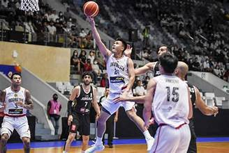
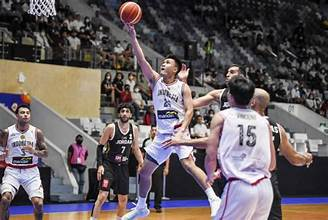
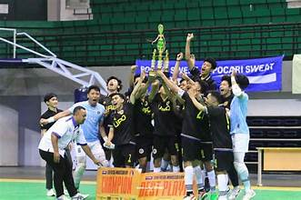
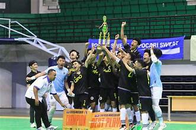

Menjadi universitas peringkat 40 besar pada tingkat nasional yang dilandasi oleh nilai humanis dan religius pada tahun 2025
MISI
Menyelenggarakan pendidikan akademik, vokasi, dan profesi yang profesional berbasis humanis dan religius.
Melaksanakan penelitian berbasis humanis dan religius yang menghasilkan inovasi untuk kesejahteraan masyarakat.
Melaksanakan pengabdian kepada masyarakat implementasi penelitian berbasis humanis dan religius.
Menyelenggarakan peningkatan kualitas sumber daya manusia yang kompeten dan profesional.
Menyelenggarakan kerja sama dalam negeri dan luar negeri berbasis saling menguntungkan.
TUJUAN
- Menghasilkan lulusan pendidikan akademik, vokasi, dan profesi yang profesional berbasis humanis dan religius
- Menghasilkan produk penelitian berbasis humanis dan religius yang inovatif untuk kesejahteraan masyarakat
- Terselenggaranya pengabdian kepada masyarakat implementasi penelitian berbasis humanis dan religius
- Terwujudnya peningkatan kualitas sumber daya manusia yang kompeten dan profesional
- Terselenggaranya kerja sama dalam negeri dan luar negeri berbasis saling menguntungkan
Unit Kegiatan Mahasiswa (UKM)
mempunyai tugas untuk merencanakan, melaksanakan, dan mengembangkan kegiatan ekstrakurikuler kemahasiswaan sesuai dengan tugas dan tanggung jawabnya. Tentunya UKM ini berada pada wilayah universitas yang sedang secara aktif mengembangkan sistem pengelolaan organisasi secara mandiri.
KESENIAN TARI
Sebagai wadah bagi mahasiswa berbakat dan peminat seni tari dan musik, UKM Tari dan Karawitan membuka kesempatan untuk mengembangkan bakat seni mereka. Di UKM ini, mahasiswa dapat mempelajari berbagai tarian tradisional dari berbagai daerah di Indonesia seperti Jawa, Bali, Sumatera dan masih banyak lagi. Selain itu, mereka bisa belajar memainkan berbagai alat musik tradisional seperti gamelan, kenong, gong dll.
PANCAK SILAT
pencak silat yang saat ini kita kenal merupakan pengembangan dari bela diri alami dari nenek moyang kita. Begitupun nenek moyang Indonesia. Untuk keperluannya dalam menghadapi kondisi alam dan bertahan hidup, mereka mengambil inspirasi bela diri dari gerakan binatang yang ada di dekat mereka.
BASKET
Basket adalah salah satu cabang olahraga yang sangat populer di seluruh dunia, termasuk di Indonesia. Dalam artikel ini, kita akan membahas secara komprehensif tentang pengertian basket, sejarahnya, peraturan yang berlaku, teknik dasar yang harus dikuasai, dan manfaat yang bisa didapatkan dari bermain basket.
TENIS MEJA
Tenis meja adalah cabang olahraga yang dilakukan oleh dua orang pemain (tunggal) atau dua pasang pemain (ganda) secara berhadapan dengan menggunakan bola kecil, bet dari kayu yang dilapisi karet, dan lapangan permainan berupa meja.
FUTSAL
Olahraga futsal merupakan olahraga permainan yang mirip dengan sepakbola meskipun dilakukan di dalam ruangan. Beberapa pemain saling bekerjasama untuk memasukkan bola ke gawang yang dijaga seorang kiper. Ukuran bola lebih kecil, gawangnya juga lebih kecil.

 

 
